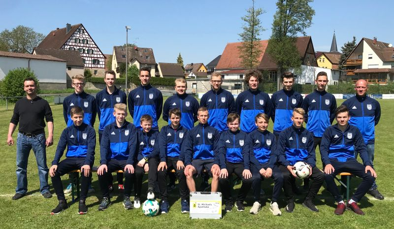
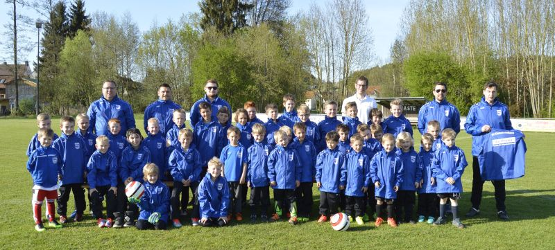

Liebe Besucher, Mitglieder, Kinder und Eltern,
im Namen der Fußballjugend des SV Kleinsendelbach e.V. heiße ich Sie auf unserer Internetseite herzlich willkommen!
Die Nachwuchsarbeit nimmt schon seit Jahren einen hohen Stellenwert bei unserem Verein ein und besitzt einen guten Ruf in und außerhalb der Gemeinde. Im Kleinfeldbereich, bis 11 Jahre, können wir alle drei Altersklassen besetzen.
Im Großfeldbereich, U13, U15, U17 und U19 haben wir uns in einer Spielgemeinschaft zusammengeschlossen. Mit den Nachbarvereinen FC Dormitz, SV Hetzles und den TSV Neunkirchen haben wir starke Partner gefunden, die wunderbar zusammen harmonieren. Durch diesen Zusammenschluss konnten Lücken in den einzelnen Altersklassen geschlossen und mit den ersten Mannschaften ein gewisses Liga-Niveau erreicht werden. Dadurch müssen talentierte Spieler nicht zwangsläufig zu größeren Vereinen wechseln und können somit ihre Fahrten zum Training kurz halten.
Die Jugend liegt uns sehr am Herzen und deshalb möchten wir unsere Jugendarbeit erhalten, verstärken und für die Zukunft ausbauen, sowie Perspektiven bieten.
 Viel Spaß beim Sport wünscht
die Jugendabteilung